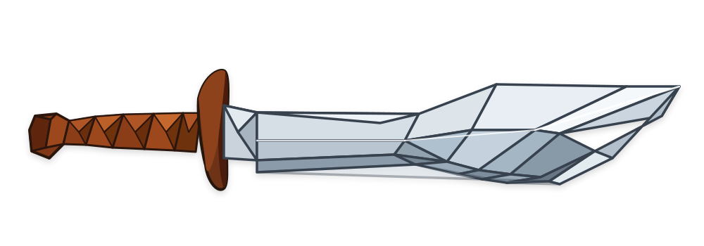
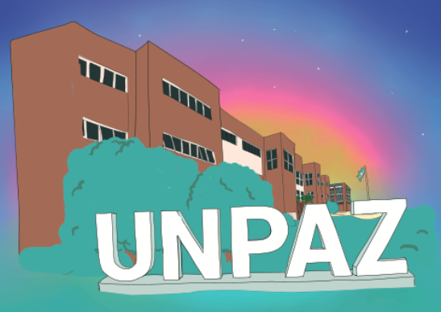
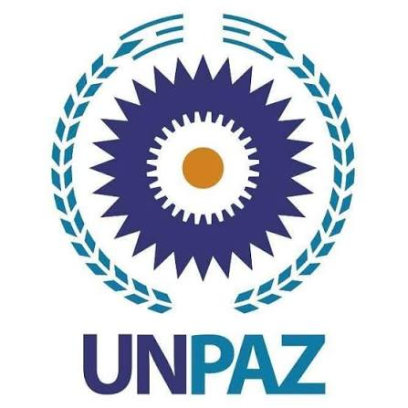

Bienvenidos a "Machetes UNPAZ", la idea de esta pagina es que funcione a modo de presentacion para el proyecto que tenemos en mente.

Uno de los principales motivos que nos llevo a pensar en este proyecto es notar que al comenzar las cursadas (y mas cuando nos encontramos en los primeros parciales) muchos de nuestros compañeros solicitan modelos de parciales, o talvez no saben como encarar el material de estudio brindado por los profesores, entonces, peensando, y dandole vueltas a la idea, nos encontramos con que tal vez si existiera un espacio donde alumnos de todas las carreras pudieran compartir sus apuntes, modelos de parciales, metodos que los ayudaron a entender ciertos temas, la cursada en general podria llegar a ser mas amena.
